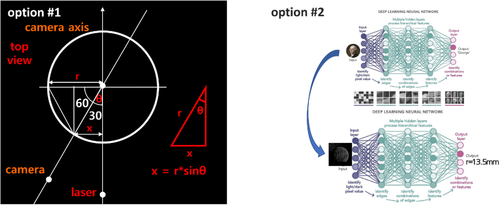

Vision Intelligence & Biomedical Engineering
Optinex Research Challenges & Phases
We follow a structured R&D path to study ocular properties and develop non-invasive biometric algorithms. Explore each phase below to see our core models, formulas, and visual outcomes.
Decoding the Neural Code
Before we can correct vision, we must understand how the brain processes it. Our research begins at the foundational level: analyzing how visual pathways interpret motion and contrast to distinguish between optical deficits and neurological processing issues.
Motion Contrast Sensitivity
Contrast sensitivity measures the visual system's ability to distinguish objects from their background, a critical indicator of functional vision beyond standard acuity. We utilize Gabor patches—sinusoidal gratings modulated by a Gaussian envelope—to precisely probe spatial and temporal summation mechanisms. By varying the size and duration of these stimuli, we can map the receptive field properties of visual neurons and isolate deficits in specific neural channels.


Mysteries of the Eye's 6 Interfaces: Refraction
Myopia progression is closely related to morphological changes in the peripheral retina. We use precise geometric optical modeling and chromatic aberration principles to quantitatively determine the impact of myopia on retinal geometry.
Study 1: Precise Geometrical Optics Modeling & Simulation
Since 2014, we have applied a calculation algorithm to precisely compute all angles of incidence and refraction at 6 refractive surfaces: anterior/posterior cornea, anterior/posterior lens cortex, and anterior/posterior lens nucleus. We map curvature radii ($R$) and refractive indices ($n_i$, $n_t$) to calculate refraction vectors. According to Snell's Law: $$n_i \cdot \sin(\theta_i) = n_t \cdot \sin(\theta_t)$$ By computing the optical path differences (OPD) at each boundary using dynamic ray-tracing, we accurately trace how peripheral retinal shape correlates with systemic myopia development.


Study 2: Chromatic Aberration-based Peripheral Refraction Measurement
To accurately measure the refractive state of the peripheral retina, we utilize the principle of Longitudinal Chromatic Aberration between Red and Green wavelengths. By projecting concentric flicker stimuli at 8°, 16°, and 32° and measuring subjective focus disparity, we map focal plane curvature deviations without standard subjective autorefractors.


Precision Corneo-Scleral 3D Reconstruction
To fit specialty contact lenses and plan corneal surgeries, mapping the cornea is insufficient—we must capture the entire corneo-scleral topography. We develop high-speed prototype devices to reconstruct this geometry in 3D using Infrared Structured Light.
3D Reconstruction via Structured Light Deformation
By projecting concentric infrared ring patterns onto the ocular surface, we capture pattern deformations with high-speed cameras. Using principles of differential geometry, we calculate height deviations ($Z(r)$) at each radius $r$ through: $$Z(r) \propto \Delta d \cdot \tan(\theta)$$ where $\Delta d$ is the local pattern displacement on the camera sensor, and $\theta$ is the projection angle. An optimized mesh-fitting algorithm reconstructs the complete 3D corneo-scleral topography in real-time with sub-micron precision, providing automated fitting parameters for clinical partners.



AI-Driven Autonomic Biomarker Screening
The eye is a window to the brain. We capture and analyze dynamic pupil reactions under structured light stimulation, utilizing deep learning algorithms to isolate autonomic biomarker indices for early-stage neurodegenerative diseases.
High-Speed Pupil Tracking & Biomarker Analysis
Using high-frame-rate cameras (up to 120 fps) under infrared illumination, we track pupil contours and capture sub-millimeter oscillations. Our pipeline extracts 10 key autonomic parameters (such as constriction latency and dilation velocity) and 47 high-dimensional biomarkers. We evaluate signal complexity through Sample Entropy metrics to track focal path variations. A reduction in pupil oscillation complexity serves as a non-invasive digital biomarker for early autonomic dysfunction.


RetiX-RT — Automated Refractometry
Optinex's featured prototype, RetiX-RT, merges traditional skiascopy principles with computer vision. By tracking dynamic reflex speeds and refraction movements across pupil axes in real-time, the system automatically calculates objective refraction values without manual user intervention.
- Concept
- Skiascopy Reflex Waveform Analysis
- Method
- Dynamic Image Processing + Neural Net Fitting
- Status
- Optical Bench Prototype completed · Clinical validation planned
Real-time Edge Ingestion Pipeline
Optinex Research is an autonomous visual intelligence R&D station specializing in advanced optometric diagnostics and ocular screening. Our real-time data pipeline streams high-frequency video feeds from edge diagnostic sensors via WebSocket connections. Cloud-based autonomous agents instantly process GPU-accelerated Gabor contrast mappings and fit 3D corneo-scleral mesh topologies, delivering secure clinical analytics to remote patient portals in seconds.